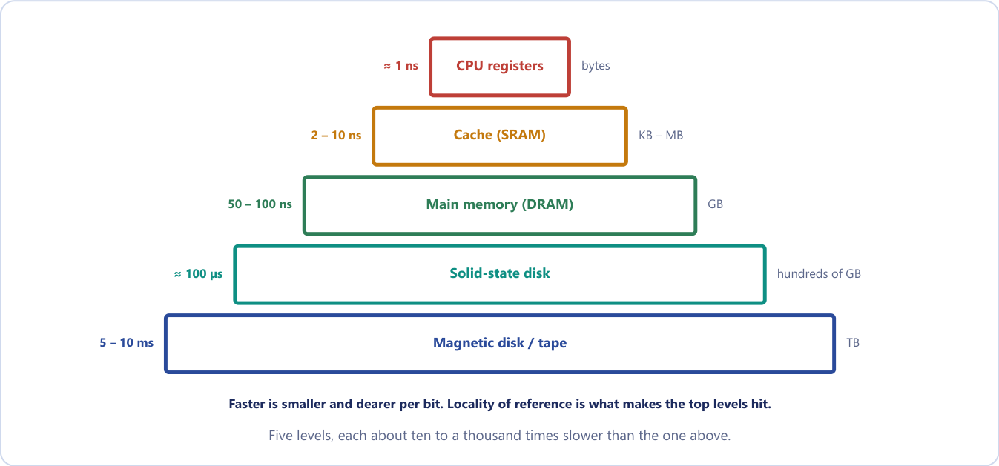
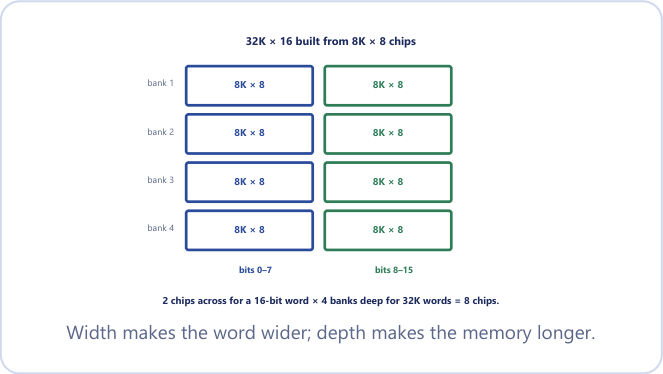
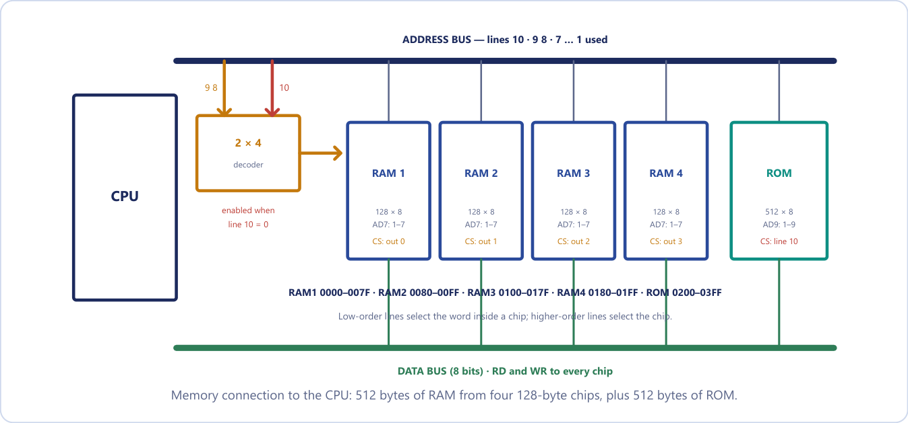
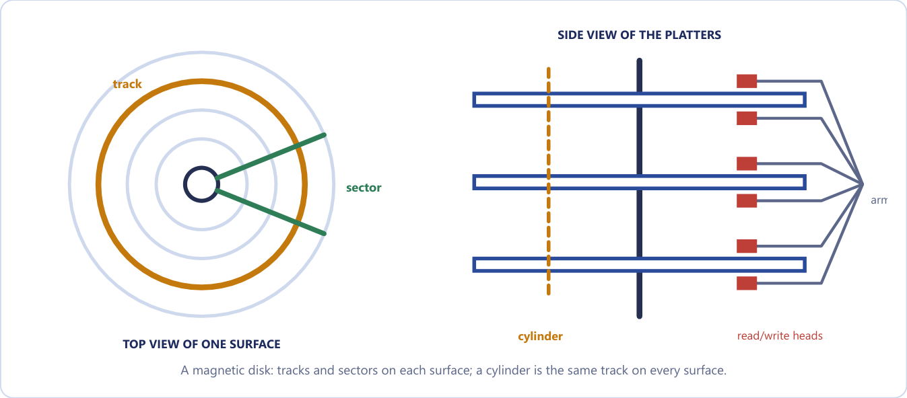

Chapter 18: Memory Hierarchy, Main Memory and Auxiliary Memory¶
Why no single memory is fast, large and cheap at once, and how chips and disks are organised to give the processor what it needs
Units 4 and 5 built a processor. A processor, however, can do nothing on its own: it needs somewhere to keep the instructions and data it is working on, and a way to talk to the world outside. This final unit deals with both. It begins here with memory, the system that feeds the processor, and ends in the last two chapters with input and output, the system that connects the processor to the people and devices around it.
The central difficulty is a mismatch of speeds. A processor that can execute an instruction in a nanosecond is useless if the next instruction has to be fetched from a disk that takes about 13 milliseconds to deliver it; that single access is worth more than ten million processor cycles. A disk access is roughly a million times slower than a register access, and every technique in this unit (caches, interrupts, direct memory access) exists to hide that gap. In this chapter we meet the first of those ideas, the memory hierarchy. We then look inside the main memory, built from RAM and ROM chips, and learn to count address lines, count chips, and assign each chip a range of addresses. Finally we study the auxiliary memories, the magnetic disk, the magnetic tape and the solid-state drive, which are large, cheap and slow.
What you will learn
- Draw the memory hierarchy and explain how access time, cost per bit and capacity change from registers down to tape.
- Distinguish SRAM from DRAM, and ROM, PROM, EPROM, EEPROM and flash from one another.
- Work out the address lines, data lines and total bits of a memory chip, and the number of chips needed for a given memory.
- Build a memory address map: decide which high-order address lines select a chip and give the hexadecimal range of every chip.
- Describe disk geometry and compute disk capacity and average access time.
- Compare disk, tape and solid-state storage by access method, speed, cost and best use.
18.1 The memory hierarchy¶
Every program wants memory that is fast, large and cheap. No single technology gives all three. The fastest storage costs the most per bit, and is therefore small; the cheapest storage is slow. A computer therefore uses several kinds of memory arranged in a hierarchy, and moves data between them so that the information being used now is almost always in a fast level, while the bulk of it sits quietly in a slow one.
Memory hierarchy
A memory hierarchy is a layered arrangement of storage (CPU registers, cache memory, main memory and auxiliary memory) in which, as we move away from the CPU, the access time increases, the cost per bit decreases and the capacity increases.
Figure 18.1 shows the five levels usually drawn: registers, cache, main memory, solid-state disk and magnetic disk or tape. Each level is roughly ten to a thousand times slower than the one above it.

The typical figures in Table 18.1 are orders of magnitude, not specifications; real devices vary, but the ratios between levels are what matter.
| Level | Technology | Typical access time | Typical capacity | Cost per bit | Managed by |
|---|---|---|---|---|---|
| CPU registers | Flip-flops | about 1 ns | bytes (tens to hundreds of words) | highest | compiler / CPU |
| Cache | SRAM | 1-10 ns | KB to MB | high | hardware |
| Main memory | DRAM (and ROM) | 50-100 ns | GB | medium | operating system |
| Solid-state disk | flash | 50-100 µs | hundreds of GB | lower | operating system |
| Magnetic disk | magnetised platters | 5-10 ms | TB | low | operating system |
| Magnetic tape | magnetised plastic strip | seconds to minutes | TB and beyond | lowest | operating system / user |
Table 18.1. Typical characteristics of each level of the memory hierarchy.
The three working levels have different jobs. The cache is a small, very fast memory (SRAM) that holds the parts of programs and data in current use, sitting between the CPU and main memory. Main memory holds the programs and data while they run, and it is the level the CPU addresses directly when it executes instructions. Auxiliary memory (also called secondary memory) is the permanent, non-volatile backup store; it is not directly addressable by the CPU, so its contents must first be copied into main memory before they can be used. The operating system's memory-management software controls the movement of programs and data between the levels.
Two terms recur throughout the chapter. Memory is volatile if it loses its contents when the power is switched off (RAM), and non-volatile if it keeps them (ROM, disk, tape, flash).
Why a hierarchy works at all¶
It seems too good to be true that a fast level thousands of times smaller than the slow level can satisfy most of the requests made to it. If requests were spread evenly over all the data, it could not. They are not. Programs exhibit locality of reference: over any short interval they keep returning to the same small set of addresses. A loop of twenty instructions run a million times generates a million references to just twenty locations. It is the references, not the bytes, that are concentrated, so a small fast level that captures the current "hot" region catches the overwhelming majority of the traffic, and the huge slow level is touched only rarely. The result is a system whose average speed approaches that of the fastest level, at an average cost per bit that approaches that of the cheapest. We define locality precisely, and measure its benefit, in the next chapter.
An everyday picture helps. Your desk holds the few books open right now (the cache); the shelf beside you holds those used this week (main memory); the library across town holds everything (the disk). You rarely walk to the library, because what you need next is usually what you were just using.
A bigger cache does not make every program fast
The hierarchy only helps if the program has locality. A program that touches gigabytes of data in a truly random order finds almost nothing in the fast levels: every access is a miss, and it runs at main-memory or disk speed however large the cache. The hardware provides the mechanism; the program's access pattern decides whether it pays off.
18.2 Main memory: RAM and ROM¶
Main memory is the central storage unit, large enough for the programs and data currently running. It is built from semiconductor integrated circuits of two families, RAM and ROM.
RAM (random-access memory) can be read and written, and it is volatile. It holds the programs and data that are currently being executed. ROM (read-only memory) has contents that are fixed in normal use, and it is non-volatile. Its classic job is to hold the bootstrap loader, the program that runs the instant the machine is switched on and that loads the operating system into RAM. The loader must be in ROM for a simple reason: at power-on RAM contains nothing, so something that survives being switched off must already be there to start the machine.
RAM versus ROM in one line
RAM: read/write, volatile, holds running programs. ROM: read-only, non-volatile, holds the bootstrap loader.
The name "RAM" is slightly misleading. Both RAM and ROM are random-access: any word can be reached in the same time whatever its position, unlike a tape, where you must wind to the spot. The historical name really distinguishes read-write memory from read-only memory. When you buy "8 GB of RAM" you are buying DRAM, the dense, cheap chips that form main memory.
Static and dynamic RAM¶
RAM comes in two technologies. Static RAM (SRAM) stores each bit in a flip-flop, which takes about six transistors. It holds its value as long as power is applied and needs no refresh; it is fast but less dense and more expensive, and it is used for cache. Dynamic RAM (DRAM) stores each bit as charge on a tiny capacitor, switched by one transistor. The charge leaks away, so every row of cells must be read and rewritten (refreshed) every few milliseconds. DRAM is slower than SRAM, but far denser and far cheaper, and it is used for main memory. The fast SRAM that makes a cache work is far too expensive to buy by the gigabyte.
| Point | SRAM | DRAM |
|---|---|---|
| Storage element | flip-flop (about 6 transistors) | capacitor and 1 transistor |
| Refresh | not needed | needed every few ms |
| Speed, density, cost | faster, less dense, costlier | slower, denser, cheaper |
| Use | cache memory | main memory |
Table 18.2. SRAM compared with DRAM.
The ROM family¶
ROM chips differ in how they are written and whether they can be erased.
- Mask ROM is written by the manufacturer: the pattern is built into the chip with a mask. It is the cheapest in huge quantities and impossible to change.
- PROM (programmable read-only memory) is shipped blank with a fuse at every cell. The user programs it once, with a PROM programmer that blows selected fuses. The change is physical and permanent, so a mistake wastes the chip.
- EPROM (erasable programmable read-only memory) uses floating-gate transistors instead of fuses. It is programmed electrically and erased by exposing the chip to ultraviolet light through a quartz window in the package, for ten to thirty minutes, which returns every cell to 1. Erasure is for the whole chip, not byte by byte, and the chip must be removed from the circuit to do it.
- EEPROM (electrically erasable PROM) is erased and rewritten electrically, byte by byte, without removing the chip from the circuit, which is what makes in-place firmware updates possible. Writing is slower than reading.
- Flash memory is an EEPROM that is erased in large blocks rather than single bytes. It is the technology of pen drives and solid-state drives.
The sequence mask ROM, PROM, EPROM, EEPROM, flash is one of progressively easier rewriting.
The pins of a memory chip¶
A memory chip has address inputs that select a word, data lines (bidirectional for a RAM, since the same pins carry data in and out), one or more chip-select inputs (CS1, CS2) that enable the chip, and read (RD) and, for RAM, write (WR) control inputs. A ROM needs only RD. When a chip is not selected, its data lines are in the high-impedance state, electrically disconnected from the data bus, so that many chips can share one bus.
18.3 Counting the wires: chip organisation¶
A memory chip that stores \(2^k\) words needs \(k\) address lines to select one word, and \(n\) data lines if each word is \(n\) bits wide. It stores \(2^k \times n\) bits in total.
So a \(128 \times 8\) RAM has 7 address lines and 8 data lines, and a \(512 \times 8\) ROM has 9 address lines. Table 18.3 lists the capacities that appear again and again.
| Address lines \(k\) | Words \(2^k\) | Written as |
|---|---|---|
| 8 | 256 | 256 |
| 10 | 1 024 | 1K |
| 12 | 4 096 | 4K |
| 16 | 65 536 | 64K |
| 20 | 1 048 576 | 1M |
| 32 | 4 294 967 296 | 4G |
Table 18.3. Address lines against the number of words.
K means 1024, not 1000
In memory sizes 1K = \(2^{10}\) = 1024, 1M = \(2^{20}\) and 1G = \(2^{30}\). A "4K" chip therefore holds 4096 words, and a block of 4K addresses spans 1000 hexadecimal. "8K × 8" means 8192 words of 8 bits, not 8000 and not 8 Kbit. Always rewrite sizes as powers of two before you count address lines or divide.
Example 18.1: Address lines, data lines and total bits
Problem. A RAM chip is organised as \(2K \times 8\). (a) How many address lines does it need? (b) How many data lines? (c) What is its total storage in bits?
Solution. (a) \(2K = 2 \times 1024 = 2048 = 2^{11}\) words, so \(k = 11\) address lines. (b) Each word is 8 bits, so there are 8 data lines. (c) Total storage \(= 2048 \times 8 = 16\,384\) bits.
In practice the chip also has a chip-select and a read/write line, and a complete answer mentions them.
Answer. 11 address lines, 8 data lines, 16 384 bits (16 Kbit).
The same arithmetic runs backwards. A \(4K \times 8\) chip has \(4096 = 2^{12}\) words, so 12 address lines and 8 data lines, and it stores \(4096 \times 8 = 32\,768\) bits, which is 4 KB. A \(256K \times 16\) memory needs 18 address lines (\(256K = 2^{18}\)), 16 data lines, and \(2^{18} \times 16 = 4\,194\,304\) bits, which is 512 KB.
18.4 Building a memory from chips¶
A memory is specified as words × bits (its depth and width), and a computer usually needs more than one chip provides. Chips can be combined in only two directions, and the two directions do different jobs.
- Width. Place chips side by side, sharing the same address lines and read together, to make a longer word. Each chip supplies a different slice of the same word. The number of chips across is the required word length divided by the chip word length.
- Depth. Place rows of chips one below another, each row with its own chip-select line, to get more words. A decoder on the high-order address bits enables exactly one row at a time. The number of rows is the required number of words divided by the chip's words.
The chip-count rule
$\(\text{chips} = \frac{\text{words needed}}{\text{words per chip}} \times \frac{\text{bits per word needed}}{\text{bits per chip word}}\)$ The first factor is the depth (rows, or banks); the second is the width (chips across). Round each factor up, because you cannot buy a fraction of a chip. The decoder has \(\log_2(\text{rows})\) inputs; the low-order address bits go to every chip and the high-order bits go to the decoder.
Figure 18.2 shows the standard example: a \(32K \times 16\) memory built from \(8K \times 8\) chips. The memory is 4 banks deep to reach 32K words and 2 chips across to make each word 16 bits wide, so 8 chips in all.

Example 18.2: How many 8K × 8 chips make 32K × 16?
Problem. How many \(8K \times 8\) RAM chips are needed to provide a memory of \(32K \times 16\) bits? Describe the wiring.
Solution.
- Depth: \(32K / 8K = 4\) banks. (\(32K = 2^{15}\), \(8K = 2^{13}\).)
- Width: \(16 / 8 = 2\) chips across.
- Total: \(4 \times 2 = 8\) chips.
Wiring: the 32K address space needs 15 address lines. The low 13 lines go to every chip as its own address. The top 2 lines go to a \(2 \times 4\) decoder whose four outputs are the chip-select lines of the four banks. Within a bank, one chip drives data bits 0-7 and the other bits 8-15.
Answer. 8 chips: 4 banks of 2, with a \(2 \times 4\) decoder on address lines \(A_{14}A_{13}\).
Do depth and width separately
Dividing capacities directly (\(32K \times 16\) over \(8K \times 8\) gives 8) happens to give the right number here, but the method is wrong and fails as soon as the numbers are less friendly. Always count rows and columns separately and multiply.
Example 18.3: Several chip counts, including a rounding trap
Problem. How many chips are needed for (a) \(8192K \times 16\) from \(16K \times 16\) chips; (b) \(4096 \times 32\) from \(16K \times 16\) chips; (c) \(64K \times 8\) from \(16K \times 4\) chips?
Solution.
(a) Depth \(8192K / 16K = 2^{23}/2^{14} = 2^9 = 512\). Width \(16/16 = 1\). Chips \(= 512 \times 1 = 512\).
(b) Note the first number is 4096, not 4096K: only 4K words, a quarter of one chip's depth. Depth \(4096/16\,384 = 0.25\), which rounds up to 1, since even a fractional bank costs a whole chip. Width \(32/16 = 2\). Chips \(= 1 \times 2 = 2\), with three quarters of their capacity unused.
(c) Depth \(64K/16K = 4\). Width \(8/4 = 2\) (the chip is too narrow). Chips \(= 4 \times 2 = 8\).
Answer. (a) 512, (b) 2, (c) 8. Forgetting the width factor in (c), or reading 4096 as 4096K in (b), are the two classic slips.
Example 18.4: A wider word: 1M × 32 from 128K × 8
Problem. How many \(128K \times 8\) RAM chips provide \(1M \times 32\) bits? Describe the arrangement.
Solution. Depth: \(1M / 128K = 1\,048\,576 / 131\,072 = 8\) banks. Width: \(32 / 8 = 4\) chips across. Total \(8 \times 4 = 32\) chips.
\(1M = 2^{20}\), so the address is 20 bits. Each chip takes the low 17 lines (\(128K = 2^{17}\)); the top 3 lines go to a \(3 \times 8\) decoder that produces eight chip-select lines. The four chips of a bank supply bits 0-7, 8-15, 16-23 and 24-31 of the same word and share the same 17 address lines.
Answer. 32 chips: 8 banks of 4, with a \(3 \times 8\) decoder on address lines \(A_{19}A_{18}A_{17}\).
18.5 Address decoding and the memory address map¶
When several chips share one memory, the CPU's address bus is split into two parts. The low-order lines go to every chip and select a word inside whichever chip is enabled. The high-order lines feed a decoder whose outputs drive the individual chip-select lines. The assignment of address ranges to chips that results is the memory address map.
A street address works the same way. "Flat 7, Block C" is split into the building ("Block C", the high-order bits, which the decoder resolves) and the door inside it ("Flat 7", the low-order bits, shared by every building). Address decoding is exactly this two-stage "which chip, then which word" lookup, done in hardware.
Building a memory address map in three steps
- From each chip's size, work out how many address lines it needs; a 4K chip needs 12.
- Those are the low-order lines, shared by every chip.
- The remaining high-order lines are the chip-select code. Count upward in binary to lay the chips out one after another in the map. Each chip's range starts at its code followed by zeros and ends at its code followed by ones.
Sending the high bits to the chips and the low bits to the decoder would also work electrically, but it would interleave the chips so that consecutive addresses fell in different chips and the ranges would no longer be contiguous. A memory-map question always means the first arrangement.
Example 18.5: A memory map with RAM and ROM
Problem. A computer has a 16-bit address bus (a 64K space). It uses four \(4K \times 8\) RAM chips and one \(4K \times 8\) ROM chip. Assign hexadecimal address ranges, starting RAM at address 0 and placing the ROM immediately after.
Solution. Each 4K chip has \(2^{12}\) words, so it uses \(A_{11}\)-\(A_0\) internally, and \(A_{15}\)-\(A_{12}\) select the chip. Each block spans 1000 hexadecimal addresses.
| Chip | \(A_{15}A_{14}A_{13}A_{12}\) | Hex range | Size |
|---|---|---|---|
| RAM 1 | 0000 | 0000 - 0FFF | 4K |
| RAM 2 | 0001 | 1000 - 1FFF | 4K |
| RAM 3 | 0010 | 2000 - 2FFF | 4K |
| RAM 4 | 0011 | 3000 - 3FFF | 4K |
| ROM | 0100 | 4000 - 4FFF | 4K |
The remaining high-order codes (0101 to 1111) are unused and available for expansion.
Answer. RAM occupies 0000-3FFF (16K); the ROM occupies 4000-4FFF (4K).
A larger worked case is Mano's classic example, which shows how a single address line can distinguish RAM from ROM. The memory is 512 bytes of RAM made from four \(128 \times 8\) chips, plus 512 bytes of ROM from one \(512 \times 8\) chip, on a CPU with a 16-bit address bus. A RAM chip has \(128 = 2^7\) words, so it uses 7 address lines; the ROM has \(512 = 2^9\) words and uses 9. Figure 18.3 shows the connections. Note that the figure numbers the address lines from 1, so "lines 1-7" are what we would call \(A_0\)-\(A_6\).

Example 18.6: Mano's RAM and ROM map
Problem. A computer needs 512 bytes of RAM from \(128 \times 8\) chips and 512 bytes of ROM from a \(512 \times 8\) chip, on a 16-bit address bus. (i) How many RAM chips? (ii) How many address lines does each chip use? (iii) Draw up the memory address map and say which lines select the chips.
Solution. (i) \(512/128 = 4\) RAM chips. (ii) RAM: \(128 = 2^7\), so \(A_6\)-\(A_0\) (7 lines). ROM: \(512 = 2^9\), so \(A_8\)-\(A_0\) (9 lines).
(iii) The seven low-order lines \(A_6\)-\(A_0\) go to the address inputs of every RAM chip. Lines \(A_8\) and \(A_7\) feed a \(2 \times 4\) decoder whose outputs drive the chip-select input of one RAM chip each. Line \(A_9\) distinguishes RAM (\(A_9 = 0\), which enables the decoder) from ROM (\(A_9 = 1\), which selects the ROM). The ROM uses \(A_8\)-\(A_0\) for its 512 words, so \(A_8\) and \(A_7\) are address inputs of the ROM; they select nothing when \(A_9 = 1\). Lines \(A_{15}\)-\(A_{10}\) are unused (0). RD and WR go to every RAM chip; the ROM needs only RD.
| Chip | Hex range | \(A_9\) | \(A_8\) | \(A_7\) | \(A_6 \ldots A_0\) |
|---|---|---|---|---|---|
| RAM 1 | 0000 - 007F | 0 | 0 | 0 | xxxxxxx |
| RAM 2 | 0080 - 00FF | 0 | 0 | 1 | xxxxxxx |
| RAM 3 | 0100 - 017F | 0 | 1 | 0 | xxxxxxx |
| RAM 4 | 0180 - 01FF | 0 | 1 | 1 | xxxxxxx |
| ROM | 0200 - 03FF | 1 | x | x | xxxxxxx |
Answer. RAM 1: 0000-007F, RAM 2: 0080-00FF, RAM 3: 0100-017F, RAM 4: 0180-01FF, ROM: 0200-03FF.
A line does one job or the other
Do not count an address line twice, once as an address input to a chip and again as an input to the decoder. A line either goes to the chips or selects among them. For the ROM in Example 18.6, \(A_8\) and \(A_7\) go to the ROM's own address inputs, and are therefore not available for selecting it; the ROM is selected by \(A_9\) alone.
Example 18.7: Eight 8K × 8 chips fill a 64K space
Problem. A \(64K \times 8\) memory is built from \(8K \times 8\) chips on a 16-bit address bus. How many chips? How are the address lines used? What decoder is needed, and what is the address range of each chip?
Solution. Rows \(= 64K/8K = 8\), chips across \(= 8/8 = 1\), so 8 chips. \(8K = 2^{13}\), so \(A_{12}\)-\(A_0\) go to every chip. The remaining three lines \(A_{15}A_{14}A_{13}\) feed a \(3 \times 8\) decoder whose output \(i\) drives the chip select of chip \(i\). Each chip spans $2^{13} = $ 2000 hexadecimal addresses.
Answer. 8 chips and a \(3 \times 8\) decoder. Chip 0: 0000-1FFF; chip 1: 2000-3FFF; chip 2: 4000-5FFF; chip 3: 6000-7FFF; chip 4: 8000-9FFF; chip 5: A000-BFFF; chip 6: C000-DFFF; chip 7: E000-FFFF.
Example 18.8: RAM and ROM chips of different sizes
Problem. A small computer uses \(512 \times 8\) RAM chips and \(1024 \times 8\) ROM chips. It must have 2K bytes of RAM at the bottom of the address space and 2K bytes of ROM immediately above it. (a) How many chips of each kind? (b) How many address lines does each chip need, and how many lines go to the selection logic? (c) Give the memory map.
Solution. (a) RAM: \(2048/512 = 4\) chips. ROM: \(2048/1024 = 2\) chips. Both chips and requirement are 8 bits wide, so the chips are stacked down the address space only.
(b) A RAM chip has \(512 = 2^9\) words: 9 lines (\(A_8\)-\(A_0\)). A ROM chip has \(1024 = 2^{10}\) words: 10 lines (\(A_9\)-\(A_0\)). The whole memory is 4K bytes \(= 2^{12}\), so the bus needs \(A_{11}\)-\(A_0\). Three lines, \(A_{11}\), \(A_{10}\) and \(A_9\), are left for selection: \(A_{11}\) separates RAM from ROM, \(A_{10}A_9\) choose one of four RAM chips, and \(A_{10}\) alone chooses between the two ROM chips (\(A_9\) is already one of the ten lines that go to a ROM chip).
(c) A RAM chip covers 512 bytes, which is 200 hexadecimal, so the RAM ranges step by 200; a ROM chip covers 1024 bytes, 400, so the ROM ranges step by 400.
| Chip | Hex range | \(A_{11}\) | \(A_{10}\) | \(A_9\) | Lines on the chip |
|---|---|---|---|---|---|
| RAM 1 | 0000 - 01FF | 0 | 0 | 0 | \(A_8\)-\(A_0\) |
| RAM 2 | 0200 - 03FF | 0 | 0 | 1 | \(A_8\)-\(A_0\) |
| RAM 3 | 0400 - 05FF | 0 | 1 | 0 | \(A_8\)-\(A_0\) |
| RAM 4 | 0600 - 07FF | 0 | 1 | 1 | \(A_8\)-\(A_0\) |
| ROM 1 | 0800 - 0BFF | 1 | 0 | x | \(A_9\)-\(A_0\) |
| ROM 2 | 0C00 - 0FFF | 1 | 1 | x | \(A_9\)-\(A_0\) |
Answer. 4 RAM chips and 2 ROM chips; 9 lines to a RAM chip and 10 to a ROM chip; 3 lines to the selection logic; map as in the table.
The map also works in reverse: given an address, which chip answers and where inside it? Take address 0A5C in the map of Example 18.8. In binary it is 0000 1010 0101 1100, so \(A_{11} = 1\) and \(A_{10} = 0\): the first ROM chip responds, and the word inside it is selected by \(A_9\)-$A_0 = $ 10 0101 1100 = 25C hexadecimal, which is word 604 of that chip. One more case: a system with a 20-bit address bus and \(4K \times 8\) chips needs \(2^{20}/4096 = 256\) chips to fill its space. Each chip uses \(A_{11}\)-\(A_0\), leaving \(A_{19}\)-\(A_{12}\), eight lines, to select among 256 chips, so a \(8 \times 256\) decoder is needed.
Example 18.9: A map with 256-byte RAM chips
Problem. A system has four \(256 \times 8\) RAM chips and one \(1K \times 8\) ROM chip. The RAM starts at address 000 and the ROM follows immediately above it. Draw the memory map.
Solution. RAM is \(4 \times 256 = 1024\) bytes and the ROM is another 1024, so the system holds 2048 bytes \(= 2^{11}\) and needs \(A_{10}\)-\(A_0\). A RAM chip uses \(256 = 2^8\) words: \(A_7\)-\(A_0\). The ROM uses \(1024 = 2^{10}\) words: \(A_9\)-\(A_0\). \(A_{10}\) decides RAM (0) or ROM (1), and \(A_9A_8\) choose one of the four RAM chips. In hexadecimal a 256-byte step is 100, and a chip that starts at 000 ends at 0FF, not 100.
| Chip | Size | Hex range | \(A_{10}\) | \(A_9\) | \(A_8\) |
|---|---|---|---|---|---|
| RAM 1 | 256 B | 000 - 0FF | 0 | 0 | 0 |
| RAM 2 | 256 B | 100 - 1FF | 0 | 0 | 1 |
| RAM 3 | 256 B | 200 - 2FF | 0 | 1 | 0 |
| RAM 4 | 256 B | 300 - 3FF | 0 | 1 | 1 |
| ROM | 1 KB | 400 - 7FF | 1 | x | x |
Answer. RAM fills 000-3FF and ROM 400-7FF: together exactly the 2K space, with nothing overlapping and nothing left over.
18.6 Auxiliary memory: the magnetic disk¶
Auxiliary memory is the large, cheap, non-volatile storage that holds programs and data not currently in use. It is much slower than main memory and is not directly addressable by the CPU: information moves between it and main memory in blocks. The three important devices are the magnetic disk, the magnetic tape and the solid-state drive. We start with the disk.
Geometry¶
A magnetic disk is a stack of circular platters coated with magnetic material, rotating at constant speed. Bits are stored as magnetised spots along concentric circles called tracks. Each track is divided into sectors, each holding a fixed number of bytes, and the sector is the smallest unit that can be read or written. A read/write head on a movable arm serves each surface; all the arms move together, so the set of tracks under the heads at one moment (the same track number on every surface) forms a cylinder. Data in one cylinder can be reached without moving the arm.

Figure 18.4 shows a top view of one surface, with a track and a sector, and a side view with the cylinder and the heads.
The capacity of a disk follows directly from the geometry:
Each platter has two recording surfaces, so a disk with four platters has eight.
Example 18.10: Disk capacity
Problem. A disk has 4 platters (8 recording surfaces), 2000 tracks per surface, 128 sectors per track and 512 bytes per sector. What is its total capacity?
Solution. Capacity \(= 8 \times 2000 \times 128 \times 512 = 1\,048\,576\,000\) bytes. Dividing by \(2^{20}\) gives exactly 1000 MB (binary megabytes), a little less than \(2^{30} = 1\,073\,741\,824\) bytes, so the capacity is just under 1 GB, not exactly 1 GB.
Answer. \(1\,048\,576\,000\) bytes, about 1 GB.
A second check: two platters (4 surfaces), 1000 tracks per surface, 64 sectors per track and 1 KB sectors give \(4 \times 1000 \times 64 \times 1024 = 262\,144\,000\) bytes, which is exactly 250 MB.
Why disks move data in blocks¶
Getting the head to the right spot takes milliseconds; once it is there, reading is fast. The expensive part is arriving, not reading. It would be absurd to pay the arrival cost for a single byte and then pay it all over again for the next, so the disk reads a whole block once it arrives, like driving across town to a warehouse and filling the car rather than fetching one item. This is also why spatial locality pays off: the neighbouring data came along for free.
Disk access time¶
Reaching a particular sector involves three delays:
- Seek time \(T_s\) is the time to move the head to the required track. It is usually the slowest and most variable part, measured in milliseconds.
- Rotational latency \(T_r\) is the time for the required sector to rotate under the head. On average this is half a revolution.
- Transfer time \(T_t\) is the time to read or write the data as it passes under the head, equal to the bytes to read divided by the transfer rate.
Why exactly half a revolution? When the head lands on a track, the sector you want could be anywhere on that circle: sometimes just arriving, sometimes a full turn away. Averaged over many random requests, the wait is half a rotation. It also follows that a faster disk cuts the latency directly: 7200 RPM halves the wait of 3600 RPM.
The half, and the units
Two slips cost marks. Using a full revolution as the average latency (it is half a revolution), and forgetting to convert revolutions per minute into seconds. A useful route is to convert RPM to milliseconds per revolution directly: one revolution takes \(60\,000/\text{RPM}\) ms. For 6000 RPM that is 10 ms, so the average latency is 5 ms.
Example 18.11: Average disk access time
Problem. A disk rotates at 7200 RPM, has an average seek time of 8 ms and a transfer rate of 40 MB/s. Find the average time to read a 4 KB block.
Solution.
- One revolution: \(60\,000/7200 = 8.33\) ms, so the average latency is \(8.33/2 = 4.17\) ms.
- Transfer: \(4096 / (40 \times 2^{20})\) s \(= 9.77 \times 10^{-5}\) s \(= 0.098\) ms.
- Total: \(8 + 4.17 + 0.098 = 12.26\) ms.
Answer. About 12.26 ms. (Taking 1 MB as \(10^6\) bytes gives a transfer time of 0.102 ms and 12.27 ms: the difference is immaterial.)
Seek and latency together account for 12.17 of the 12.26 ms, over 99 per cent. The actual reading takes almost no time at all. That is why sequential access is so much faster than random access: read the next sector and you pay neither seek nor latency, only the 0.1 ms. It is also why 13 ms, which feels instant to a human, is for a processor a wait of ten million cycles or more.
Example 18.12: Two more disks
Problem. (a) A disk spins at 5400 RPM with a 10 ms average seek and a 20 MB/s transfer rate. Find the average time to read 8 KB. (b) A disk spins at 7200 RPM, with 5 ms seek and 100 MB/s; read 4 KB.
Solution. (a) One revolution \(= 60\,000/5400 = 11.11\) ms, so latency \(= 5.56\) ms. Transfer \(= 8192/(20 \times 2^{20})\) s \(= 0.39\) ms. Total \(= 10 + 5.56 + 0.39 = 15.95\) ms.
(b) Latency \(= 4.17\) ms. Transfer \(= 4096 / (100 \times 10^6) = 0.041\) ms. Total \(= 5 + 4.17 + 0.04 = 9.21\) ms.
Answer. (a) 15.95 ms. (b) 9.21 ms. In both cases the transfer itself is under 3 per cent of the time.
18.7 Magnetic tape and the solid-state drive¶
Magnetic tape stores bits along a long plastic strip coated with magnetic material, read and written by heads as the tape moves past them. Records are separated by inter-record gaps. Tape is a sequential-access device: to reach a record, every earlier one must pass the head, so access time is high (seconds to minutes) and unpredictable. But it is very cheap per bit and non-volatile, which makes it ideal for backup and archival storage rather than active use.
Tape is not obsolete
The world's largest data centres still buy tape in bulk. For data that must be kept but will rarely be read (legal archives, scientific backups, cold cloud storage), tape's rock-bottom cost per bit and the fact that a cartridge on a shelf needs no power beat both disk and SSD. The lesson is that the best storage depends on the access pattern: sequential, write-once, read-rarely data belongs on the cheapest sequential medium, not the fastest random one.
A solid-state drive (SSD) uses flash memory, so it has no moving parts and therefore no seek time and no rotational latency at all. Latency is measured in tens of microseconds rather than milliseconds, and random access costs almost the same as sequential. SSDs are silent and shock-resistant, but dearer per bit than disks, and each flash block survives only a limited number of erase cycles. Controllers therefore use wear levelling to spread the writes evenly over the chip. Their main costs are the flash read latency and, for writes, the fact that flash must be erased in whole blocks before it can be rewritten, which is why writes are slower than reads.
| Property | Magnetic disk | Magnetic tape | SSD (flash) |
|---|---|---|---|
| Access method | direct (random), mechanical | sequential only | direct (random), electronic |
| Moving parts | yes (platters, heads) | yes (reels) | none |
| Typical access time | about 10 ms | seconds to minutes | 50-100 µs |
| Cost per bit | low | lowest | higher |
| Volatility | non-volatile | non-volatile | non-volatile |
| Best use | bulk online storage | backup and archive | fast active storage |
Table 18.4. Comparison of the auxiliary storage devices.
The disk remains the clearest illustration in the course of a principle that runs through the whole unit: getting to the data costs far more than reading it. That is why memory is moved in blocks, why a cache fetches a whole line, and why a virtual-memory page is large, as the next chapter shows.
Example 18.13: Compare main, auxiliary and cache memory
Problem. What is cache memory? Compare main memory, auxiliary memory and cache memory in speed, cost and function.
Solution. A cache is a small, very fast memory placed between the CPU and main memory, holding the blocks most recently or most frequently used. Because programs exhibit locality of reference, most requests are found there and are served at cache speed instead of memory speed. It is managed by hardware and is invisible to the programmer.
| Cache | Main memory | Auxiliary memory | |
|---|---|---|---|
| Technology | SRAM | DRAM | magnetic disk, SSD, tape |
| Typical speed | 2-10 ns | 50-100 ns | 0.1 ms (SSD) to 10 ms (disk) |
| Typical size | KB to a few MB | GB | TB |
| Cost per bit | highest | medium | lowest |
| Volatile? | yes | yes | no |
| Function | holds what the CPU is using now | holds running programs and their data | holds everything permanently |
| Reached by | the CPU directly | the CPU directly | only through main memory |
Answer. The last row is worth a mark of its own: auxiliary memory is not addressable by the CPU; its contents must first be copied into main memory.
18.8 Summary¶
Key points
- The hierarchy is registers, cache, main memory, auxiliary memory. Going down, access time rises, cost per bit falls and capacity grows. It works because of locality of reference.
- RAM is read/write and volatile (SRAM for cache, DRAM for main memory); ROM is non-volatile and holds the bootstrap loader. The ROM family is mask ROM, PROM, EPROM, EEPROM, flash.
- A chip of \(2^k \times n\) bits has \(k\) address lines and \(n\) data lines. K means 1024.
- Chips \(=\) (words needed / words per chip) \(\times\) (bits needed / bits per chip), each factor rounded up. A decoder on the high-order lines selects the bank.
- In an address map, low-order lines address a word inside a chip; high-order lines feed a decoder that drives the chip-select lines. A line does one job or the other.
- Disk capacity \(=\) surfaces \(\times\) tracks \(\times\) sectors \(\times\) bytes. Access time \(=\) seek \(+\) half a revolution \(+\) transfer, and seek plus latency dominate.
- Tape is sequential, very cheap and used for backup. An SSD has no moving parts and so no seek or rotational latency.
| Topic | Formula or rule |
|---|---|
| Address lines | \(k = \log_2(\text{words})\); data lines \(=\) word width |
| Chip count | (words / chip words) \(\times\) (word bits / chip bits) |
| Decoder inputs | \(\log_2(\text{rows})\) = address bits \(-\) chip address bits |
| Hex size of a block | 256 B = 100, 512 B = 200, 1 KB = 400, 4 KB = 1000, 8 KB = 2000 |
| Average rotational latency | \(\frac{1}{2} \times 60/\text{RPM}\) s |
| Disk access time | \(T_s + T_r + T_t\) |
| Disk capacity | surfaces \(\times\) tracks \(\times\) sectors \(\times\) bytes per sector |
18.9 Exercises¶
Exercise 18.1. List the levels of the memory hierarchy from fastest to slowest and state how access time, cost per bit and capacity change as you go down.
Answer
CPU registers, cache (SRAM), main memory (DRAM), auxiliary memory (SSD, disk, tape). Going down, access time increases, cost per bit falls and capacity grows. The hierarchy gives near-cache speed at near-disk cost because of locality of reference.
Exercise 18.2. Which memory is fastest and closest to the CPU? (a) Main memory (DRAM) (b) Cache (c) Magnetic disk (d) Magnetic tape
Answer
(b). The cache is SRAM placed between the CPU and main memory. (Registers are faster still, but they are part of the CPU.)
Exercise 18.3. Distinguish SRAM from DRAM on four points and say where each is used.
Answer
SRAM: six transistors per cell, no refresh, faster, less dense and more expensive; used for cache. DRAM: one transistor and one capacitor per cell, needs periodic refresh, slower, much denser and much cheaper; used for main memory.
Exercise 18.4. Why does a computer need ROM at all, when RAM is faster and writable?
Answer
RAM is volatile. When power is applied, RAM holds nothing, so there is no program for the CPU to execute. The bootstrap loader must live in a non-volatile memory, and ROM cannot be corrupted by a runaway program either.
Exercise 18.5. Define PROM, EPROM and EEPROM in one line each.
Answer
PROM: shipped blank, written once by blowing fuses; permanent. EPROM: floating-gate cells, erased as a whole chip by ultraviolet light through a quartz window, then rewritable. EEPROM: erased and rewritten electrically, byte by byte, without removing the chip from the circuit.
Exercise 18.6. True or false: both RAM and ROM are random-access memories. Explain.
Answer
True. In both, any word can be reached in the same time regardless of its position. "RAM" really means read-write memory, to distinguish it from read-only memory.
Exercise 18.7. Spot the error. A student writes: "A \(4K \times 8\) memory chip needs 4 address lines and 8 data lines, because 4K means 4 and there are 8 bits per word. Its total capacity is \(4 \times 8 = 32\) bits." Identify every mistake and give the corrected figures.
Answer
Three mistakes. (i) \(4K = 4096 = 2^{12}\), so the chip needs 12 address lines, not 4 (K is 1024, not the digit 4). (ii) 8 data lines is correct. (iii) Capacity is \(4096 \times 8 = 32\,768\) bits = 32 Kbit = 4 KB, not "32 bits".
Exercise 18.8. A memory system uses \(4K \times 8\) RAM chips. How many chips are needed to build (a) a \(16K \times 8\) memory and (b) a \(16K \times 16\) memory? How many address lines does the full 16K memory need?
Answer
(a) \(16K/4K = 4\) chips. (b) \(4 \times 2 = 8\) chips (two chips across for the 16-bit word). \(16K = 2^{14}\), so 14 address lines: 12 to every chip and 2 to a \(2 \times 4\) decoder.
Exercise 18.9. A computer has 64K words of memory. Addresses 0000-3FFF (hex) are ROM and the rest is RAM. Give the address range of the RAM and state how many words are ROM and how many are RAM.
Answer
ROM \(=\) 0000-3FFF \(= 4000_{16} = 16\,384\) words \(= 16K\). RAM \(=\) 4000-FFFF, which is \(64K - 16K = 48K\) words.
Exercise 18.10. How many \(16K \times 4\) RAM chips are needed for \(64K \times 8\)? Describe the arrangement and the decoding.
Answer
Depth \(64K/16K = 4\), width \(8/4 = 2\), so 8 chips, as 4 banks of 2. The address is 16 bits: the low 14 go to the chips (\(16K = 2^{14}\)), and the top 2 go to a \(2 \times 4\) decoder driving the four chip-select lines.
Exercise 18.11. A \(1M \times 32\) memory is built from \(256K \times 8\) chips. Give the number of chips, the address split and the size of the decoder.
Answer
Depth \(1M/256K = 4\), width \(32/8 = 4\), so 16 chips. The address is 20 bits: the low 18 go to the chips (\(256K = 2^{18}\)), the top 2 to a \(2 \times 4\) decoder.
Exercise 18.12. Using the memory map of Example 18.8, which chip responds to address 05A0, and which word of that chip is selected?
Answer
05A0 \(=\) 0000 0101 1010 0000. \(A_{11} = 0\), \(A_{10} = 1\), \(A_9 = 0\), so RAM 3 (0400-05FF) responds. The word inside the chip is given by \(A_8\)-$A_0 = $ 1 1010 0000 $= $ 1A0 \(= 416\).
Exercise 18.13. A disk rotates at 6000 RPM, with an average seek time of 8 ms and a transfer rate of 40 MB/s. Estimate the average time to read one 4 KB block.
Answer
One revolution takes \(60\,000/6000 = 10\) ms, so the average latency is 5 ms. Transfer is \(4096/(40 \times 10^6) \approx 0.10\) ms. Total \(= 8 + 5 + 0.1 = 13.1\) ms.
Exercise 18.14. A disk has 2 platters, 1000 tracks per surface, 64 sectors per track and 1 KB per sector. (a) What is its capacity? (b) A disk spins at 5400 RPM with a 6 ms average seek; estimate the access time for a small sector, ignoring transfer.
Answer
(a) \(4 \times 1000 \times 64 \times 1024 = 262\,144\,000\) bytes \(= 250\) MB (4 surfaces from 2 platters). (b) One revolution is \(60\,000/5400 = 11.11\) ms, latency 5.56 ms; access time \(\approx 6 + 5.56 = 11.6\) ms.
Exercise 18.15. Average rotational latency of a disk equals: (a) one full rotation (b) half a rotation (c) the seek time (d) zero. Explain why.
Answer
(b). When the head arrives on a track, the wanted sector is at a random angular position, anywhere from just arriving to a full turn away, so on average it is half a rotation away.
Exercise 18.16. Define track, sector, cylinder and seek time in one line each.
Answer
Track: one concentric ring on one surface. Sector: a wedge of a track, the smallest unit that can be read or written. Cylinder: the same track number on every surface, reachable without moving the arm. Seek time: the time to move the arm to the required track.
Exercise 18.17. Why does an SSD have no rotational latency, and what replaces seek time as its main cost? When would you still choose tape?
Answer
An SSD has no moving parts, so nothing spins and there is nothing to wait for. Its costs are the flash read latency of tens of microseconds and, for writes, the need to erase whole blocks before rewriting, which also wears the cells. Tape is chosen for backup and archive data that is kept but rarely read, because its cost per bit is the lowest and a cartridge on a shelf needs no power.
Exercise 18.18. Self-test (ten minutes, closed book). (a) A RAM chip is \(4K \times 8\): how many address and data lines? (b) A 16-bit address bus uses two \(8K \times 8\) RAM chips and one \(8K \times 8\) ROM: give the hex address ranges, with RAM first. (c) A disk spins at 7200 RPM with 8 ms average seek: find the average access time for a small sector, ignoring transfer.
Answer
(a) \(4K = 2^{12}\), so 12 address lines and 8 data lines (32 768 bits in all). (b) \(8K = 2^{13}\), so \(A_{12}\)-\(A_0\) are internal and \(A_{15}A_{14}A_{13}\) select the chip: RAM 1 0000-1FFF, RAM 2 2000-3FFF, ROM 4000-5FFF. (c) One revolution is 8.33 ms, so the average latency is 4.17 ms; access time \(= 8 + 4.17 = 12.17\) ms.